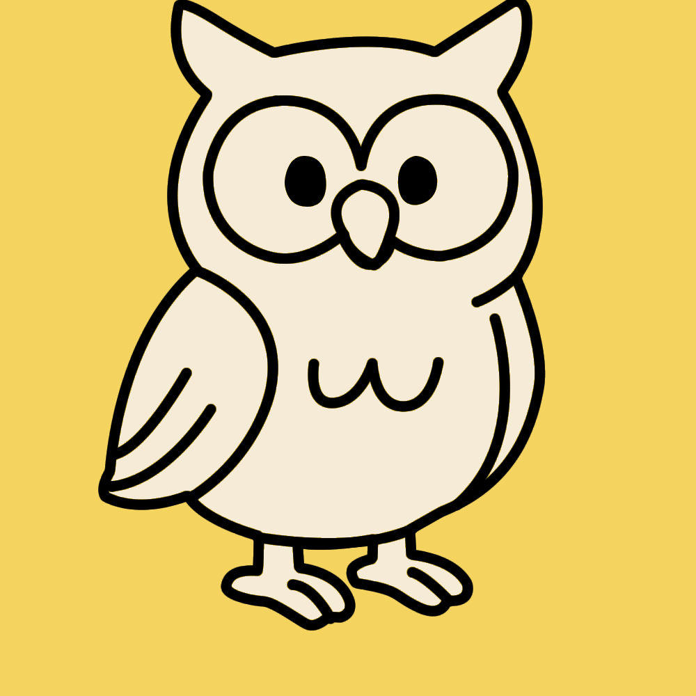

CapiSeguridad
Aprende seguridad digital de forma divertida y efectiva
Sobre la Aplicación
CapiSeguridad es una innovadora aplicación educativa que utiliza realidad aumentada para enseñar sobre seguridad digital de manera divertida y accesible. A través de situaciones cotidianas y personajes entrañables, los usuarios aprenden a identificar y evitar amenazas como phishing, contraseñas débiles y redes Wi-Fi inseguras.
¿Por qué elegir CapiSeguridad?
Combina educación y entretenimiento para hacer el aprendizaje de seguridad digital accesible para todas las edades.
Educativo
Contenido verificado por expertos en ciberseguridad
Interactivo
Aprende jugando con desafíos y recompensas
Para todos
Diseñado para todas las edades y niveles de conocimiento
Nuestros Personajes
Conoce a los personajes que te guiarán en este viaje de aprendizaje sobre seguridad digital. Cada uno tiene su propia personalidad y rol en la aplicación.


Descarga la App
Comienza tu aventura en seguridad digital hoy mismo

Haz clic en la imagen para descargar